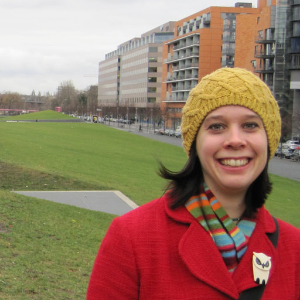
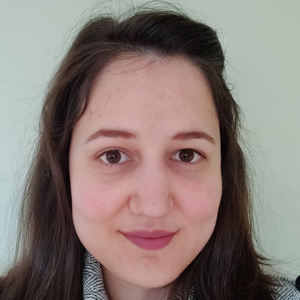

Better methods to study the political molding of public opinion in various media will be developed by researchers at Karlstad University led by Annika Fredén in collaboration with Moa Johansson at Chalmers University of Technology.
As political messages and debates have become increasingly common in social media such as Twitter, Facebook, and Instagram, there is an increased need to be able to study these texts and images from a research perspective. By using methods from the fields of computer science and social sciences, we have a greater possibility of gaining a deeper understanding of these political messages and how it affects behaviors.
In the project, the researchers will be using methods from artificial intelligence and computer science to improve and develop new quantitative text analysis methods for the social sciences. The study also contributes to computer science by applying artificial intelligence technology in an area of concern to us all: politics and human interaction.
Contact:
Moa Johansson
Departement of Computer Science and Engineering
Chalmers University
Rännvägen 6B (Room 6479)
412 96 Göteborg
Sweden
E-mail: moa.johansson@chalmers.se
|  | Moa Johansson | I am currently an Associate Professor (Docent) at the Departement of Computer Science and Engineering at Chalmers University in Gothenburg, Sweden. My research interests include an diverse mix of applications of AI: from maths and automated reasoning to sports science and natural language processing for political science. |
|  | Denitsa Saynova | Text about Denitsa... |
| Bastiaan Bruinsma | Text about Bastiaan... | |
| Annika Fredén | Text about Annika... | |
| Pasko Kisic Merino | Text about Pasko... |
Fredén, Annika & Johansson, Moa & Kisic Merino, Pasko & Saynova, Denitsa. (2021). A Comparison of Language Processing Models in Political Analysis: Evidence from Sweden.